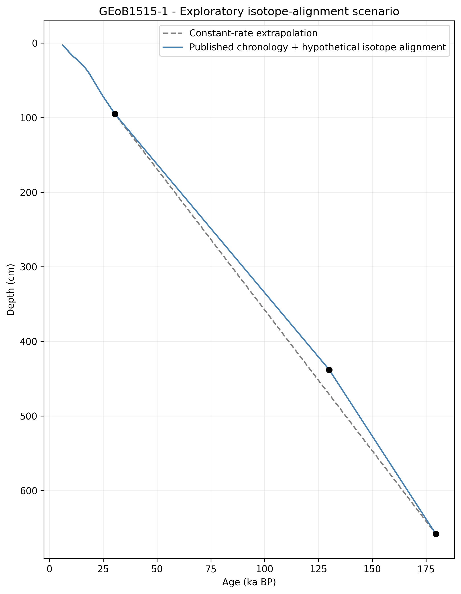
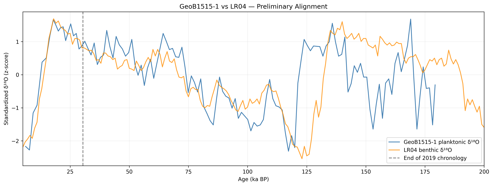

Oxygen Isotope Stratigraphy
Oxygen isotope measurements from marine sediment cores provide information about past oceanographic and climatic conditions. Variations in oxygen isotope ratios reflect several influences, including changes in seawater isotopic composition and temperature.
This investigation uses published planktonic foraminiferal oxygen isotope measurements from sediment core GeoB1515-1 to examine stratigraphic variability throughout the recovered sediment sequence.
Research Objectives
The analysis examines variations in planktonic δ¹⁸O with sediment depth, identifies prominent stratigraphic features, and explores their relationship to Quaternary climate variability.
The isotope record was also used to investigate the feasibility of constructing an age–depth model using published chronological constraints and the LR04 global benthic oxygen isotope stack. This investigation ultimately highlighted limitations in the available chronological data.
Data source: Rühlemann et al. (1998), Stable isotopes of sediment core GeoB1515-1. PANGAEA.54617
Oxygen Isotope Depth Profile
The planktonic oxygen isotope record contains 131 measurements spanning sediment depths of 3–657 cm. Variations in δ¹⁸O provide a stratigraphic record influenced by changes in ocean temperature, seawater isotopic composition, and other oceanographic processes.
Planktonic δ¹⁸O
The depth profile illustrates variations in oxygen isotope composition throughout the recovered sediment sequence.

Stratigraphic Observations
The planktonic δ¹⁸O record exhibits substantial variability throughout the sediment sequence, including gradual changes and relatively abrupt isotopic transitions.
Upper Sediment Sequence
The upper portion of the core begins with relatively negative δ¹⁸O values, followed by a pronounced shift toward more positive values within the upper 50 cm.
Middle Sediment Sequence
Between approximately 100 and 400 cm, the isotope record exhibits fluctuations superimposed on broader changes in isotopic composition.
Deeper Sediment Sequence
A prominent isotopic transition occurs between approximately 420 and 450 cm, followed by continued variability toward the base of the core.
Paleoceanographic Interpretation
Oxygen isotope ratios measured in planktonic foraminifera reflect a combination of environmental influences, including seawater temperature, seawater isotopic composition, and changes in global ice volume.
The GeoB1515-1 isotope record therefore provides evidence of changing oceanographic conditions, but individual isotopic excursions cannot be attributed to temperature or ice-volume changes without additional constraints.
Stratigraphic Correlation
The published planktonic isotope record can be compared with established marine isotope stratigraphies to investigate possible glacial–interglacial transitions.
However, the LR04 reference stack is based on benthic foraminiferal δ¹⁸O measurements. Differences in habitat, temperature sensitivity, and regional oceanographic conditions mean that direct alignment with the planktonic GeoB1515-1 record requires caution.
A preliminary age–depth model was investigated using published chronological constraints and oxygen isotope correlations. However, the resulting chronology was not sufficiently constrained to support reliable marine isotope stage assignments throughout the core.
Chronological Investigation: Evaluating an Age–Depth Model
One of the challenges I encountered while studying GeoB1515-1 was determining the age of the sediment throughout the core. Although previous research suggested that the core contained a record extending back approximately 180,000 years, I needed a more detailed chronology to investigate how mineralogical changes related to past climate conditions.
Finding the Chronological Data
I began by searching published datasets and previous studies of GeoB1515-1.
Several studies had already developed age models for portions of the core, including Vidal et al. (1999), Lippold et al. (2016), and Süfke et al. (2019). These studies used different chronological approaches, including radiocarbon dating, isotope correlations, and revised radiocarbon calibrations.
The most recent published chronology provided age estimates for the upper 95 cm of the core, extending to approximately 30,400 years before present.
The challenge was extending that chronology through the remaining 563 cm.
Attempting an Oxygen Isotope Alignment
To investigate the deeper sediments, I retrieved the published planktonic oxygen isotope measurements for GeoB1515-1 and compared them with the LR04 global benthic oxygen isotope stack.
My initial plan was to use Python to identify corresponding climatic transitions between the two records and construct an age–depth relationship.
However, the two datasets measure somewhat different environmental signals.
Planktonic foraminifera record conditions in the upper ocean, where oxygen isotope values are influenced by temperature, seawater composition, and global ice volume. Benthic foraminifera record conditions in the deep ocean and provide a different perspective on glacial–interglacial variability.
The original benthic isotope measurements used in the earlier published age-model correlations were not available in the datasets I could obtain.
Without those measurements, I couldn't directly reproduce the original correlations.
Testing a Preliminary Age Model
I first reconstructed the published upper-core chronology using linear interpolation between its reported age assignments.
The resulting sedimentation rates ranged from approximately 2.4 to 5.0 cm per thousand years.
Using the average rate of 3.78 cm per thousand years, I then extrapolated the chronology through the remainder of the core. This produced an estimated bottom age of approximately 179,500 years.
Although this was consistent with the approximate age range previously reported for the core, the agreement did not independently validate the extrapolation.
Exploratory Age–Depth Models

I then used the provisional ages to compare the planktonic isotope record with LR04.
Comparison with the LR04 Reference Stack

The overall correlation for the extrapolated section was moderate (r = 0.401), but the agreement varied substantially between intervals.
Correlation with the LR04 Reference Stack
| Estimated age interval | Correlation with LR04 |
|---|---|
| 30.4–60 ka | 0.318 |
| 60–90 ka | 0.776 |
| 90–120 ka | 0.779 |
| 120–150 ka | −0.099 |
| 150–180 ka | −0.098 |
Correlations calculated using provisional age assignments for the GeoB1515-1 planktonic isotope record and the LR04 benthic isotope reference stack. These values do not establish independent chronological control.
The relatively strong correlations between 60 and 120 ka indicated similarities between portions of the two isotope records. However, these similarities alone could not establish that the records were correctly aligned in time.
The poor agreement in the older intervals also highlighted the limitations of assuming a constant sedimentation rate throughout the core.
I investigated possible isotope tie points, but without additional independent chronological constraints, I couldn't determine whether apparent similarities represented the same climatic events.
What I Concluded
Ultimately, I was able to construct a provisional numerical age–depth model, but not one that I considered sufficiently constrained for detailed paleoceanographic interpretation.
The absence of the original benthic isotope dataset was an important limitation, particularly because I wanted to reproduce and evaluate the published correlations rather than simply assign ages based on visual similarities.
The exercise also demonstrated why a mathematically consistent age model isn't necessarily a geologically reliable one.
For the mineralogical investigation, I therefore decided to retain sediment depth as the primary reference rather than assign specific ages to mineralogical changes using an insufficiently validated chronology.
The preliminary model remains useful for exploratory analysis, but its extrapolated ages should not be interpreted as established chronological constraints. A more reliable chronology would require additional independent age constraints or access to the original benthic isotope measurements used in previous studies.
This investigation reinforced an important part of scientific data analysis: recognizing when the available evidence is insufficient to support a particular interpretation is just as important as producing a result.
The publications and datasets used in this investigation are documented on the Methods & Data Sources page.